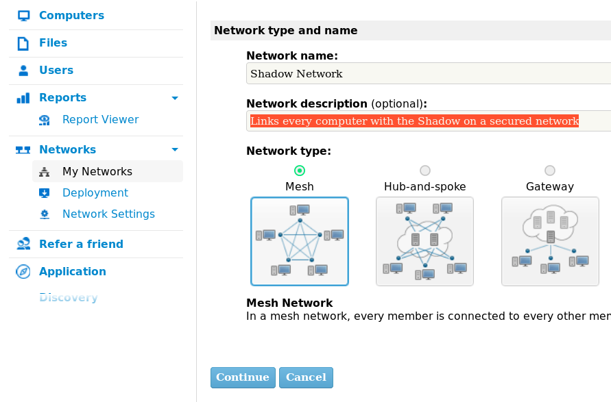
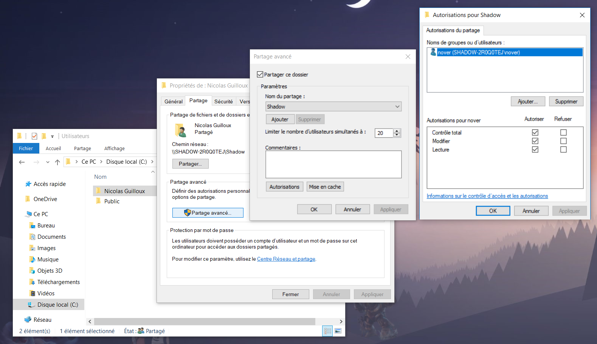
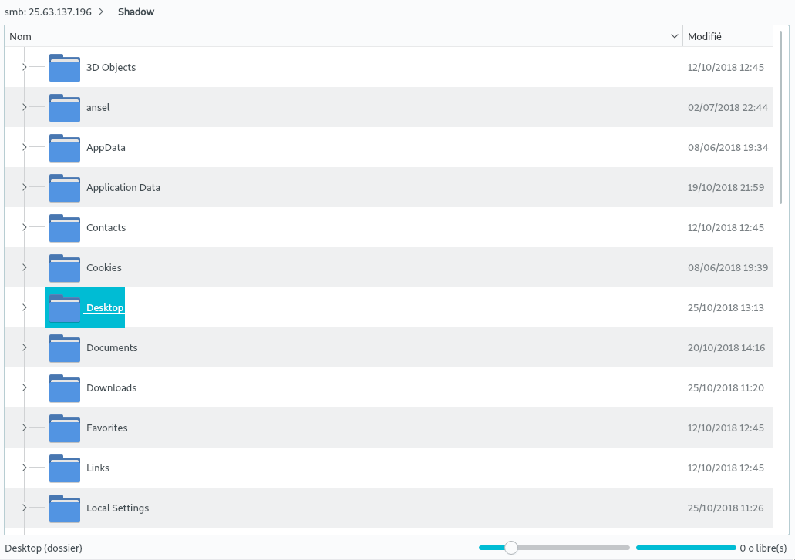
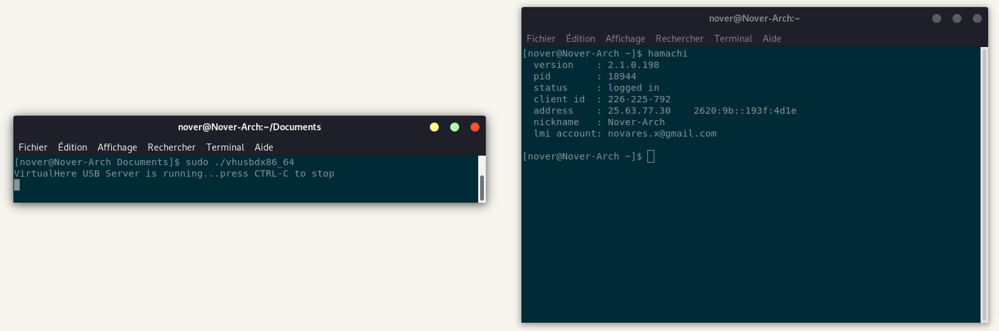
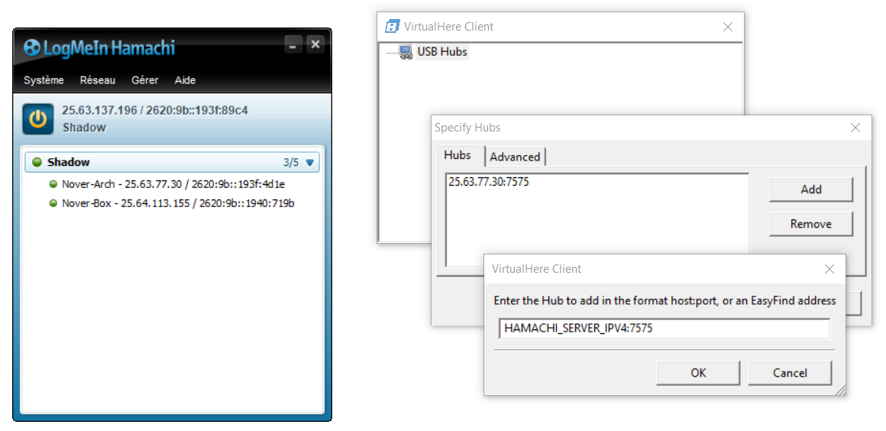

Tweaks
On Linux, a lot of scripts and tweaks can be designed, especially to integrate and interact with distant computers like your Shadow. This page provides some tutorials made by the community to integrate your Shadow in your favorite system.
The Linux community for Shadow.
On Linux, a lot of scripts and tweaks can be designed, especially to integrate and interact with distant computers like your Shadow. This page provides some tutorials made by the community to integrate your Shadow in your favorite system.
We made this tutorial using Hamachi, but most users use now ZeroTier as it is free, less restrictive and less intrusive compared to Hamachi. It even has Android application. We recommend you to use this software.
Linux is very efficient to mount distant filesystem in your local one, providing a seemlessly integration in your favorite file browser. For this tutorial, Hamachi and Samba will be used.
Samba is a Linux effort to support the SMB protocol, proprietary protocol of Microsoft for Windows. We use this protocol as it is already implemented in Windows and do not need an additional server. SMB is mainly designed for local sharing.
This is were Hamachi becomes handy. Hamachi will create a VPN tunnel between all members of of the network (maximum 5 computers for a free account). Creating this VPN will also put these members on a "local" network for Windows, which also bring the ability to use SMB share protocol.
We will install Hamachi on your machine. I let you download the appropriate file for your distribution and architecture on this link: https://www.vpn.net/linux (for Arch users, logmein-hamachiAUR).
Hamachi on Linux do not have a GUI, but you're not effraid right ? First let's configure Hamachi to allow your user to use it.
echo "Ipc.User $USER" | sudo tee -a /var/lib/logmein-hamachi/h2-engine-override.cfg
Then start the Hamachi service. This command depends on your distribution, I let you do this. Then, create an account on the official website of Hamachi. Then open a terminal, and let's configure Hamachi by doing hamachi login && hamachi attach-net YOUR_EMAIL. After this, go on the Hamachi website and accept the join request.
Start the Shadow, we are close to the end. Download the VirtualHere executable and Hamachi on the Hamachi website.
Install Hamachi first by following the steps. When the window is finally opened, log you in. The go on the Hamachi website, log you in and accept the request. Then create a network by clicking on "My network" and "Create a network". Choose a "mesh" architecture and name it whatever your want. When done, add your 2 computers, the Shadow and your PC, in the created network. You can now close your webbrowser but keep the Hamachi window open.

Your computers are now on the same network, we can start the SMB configuration. The first step will be to create a dedicated user with a password for the share to separate the share from your administrator account.
Go into the parameters, select Accounts, Family and other users and finally, click on "Add a new user". Please consider for security to make this account non administrator. Set a simple user name (all lower case to fit the UNIX standard) and a password. For this tutorial, we consider that the user is nover. Please change them to the one you actually typed.
Now we need to allow the share for Windows. It sounds scary but we will use commands on Windows... Open a terminal on your Shadow by searching "cmd" and right click on the result, execute as Administrator. When openned, type the following commands:
netsh advfirewall firewall set rule group="File and Printer Sharing" new enable=Yes
netsh advfirewall firewall set rule group="Network Discovery" new enable=Yes
Right click on the folder you want to share and click on parameters. For the next screen, I chose to share the whole user folder called "Nicolas Guilloux". Under the "Share" tab, click on "Advanced share". Check the checkbox to share it, give it a pretty name if you want and then click Authorizations. My advice is to remove all users already present in the window, especially "All". Then click on "Add", type nover, click on verify and then validate. You can manage specific rights for specific users, I chose to give a full access to my user. You can now close all windows by clicking on "OK".

Back on your Linux, install Samba and start your favorite file browser. Get the IP of your Shadow from Hamachi too. You can now access to your share by going to smb://HAMACHI_IP_ADDRESS and entering the share user and his password.

On Dolphin, you can add a shortcut for instance under Network.
We made this tutorial using Hamachi, but most users use now ZeroTier as it is free, less restrictive and less intrusive compared to Hamachi. It even has Android application. We recommend you to use this software.
VirtualHere will use the technology "USB Over IP" coded in the Linux Kernel to mount an USB device on the client computer whatever the OS. It was designed for a local network or, at least, a secured network. It uses the port 7575 and work really well in a local network.
Openning the port 7575 of your box to forward VirtualHere to the outside world is very very very dangerous. You litterally open your computer to anybody, and then can have a full access to your peripherals (like your webcam) or damage your computer. Please, do not do this.
A way to bring Shadow inside your local network is to use Hamachi. It creates a private tunnel between every members of your network using the VPN technology. It's safe, it's pretty low latency and easy to use. Moreover, as you will be on a "local" (secured is more appropriated) network with your Shadow, you will be able to use VirtualHere.
This tutorial is quite outdated as we strongly recommand you to use ZeroTier instead of Hamachi. It is a free solution with a lot less restriction and also less intrusive.
Now, let's install it, shall we ? We will consider that the computer where the gamepad is plugged is a Linux. But keep in mind that you can for instance plug a device on your Raspberry Pi and forward this device to your Shadow asweel, it's magic ! We will also that the "client" will be a Shadow, so on Windows.
First, we will install VirtualHere. On Linux, it is very straighforward as the Linux kernel already have this technology. Open a terminal, move where you want to put the one-file software and then, execute the following code:
wget http://www.virtualhere.com/sites/default/files/usbserver/vhusbdx86_64
chmod +x ./vhusbdx86_64
sudo ./vhusbdx86_64-b like follwing: sudo ./vhusbdx86_64 -b.
Next, we will install Hamachi on your machine. I let you download the appropriate file for your distribution and architecture on this link: https://www.vpn.net/linux (for Arch users, logmein-hamachiAUR).
Hamachi on Linux do not have a GUI, but you're not effraid right ? First let's configure Hamachi to allow your user to use it.
echo "Ipc.User $USER" | sudo tee -a /var/lib/logmein-hamachi/h2-engine-override.cfg
Then start the Hamachi service. This command depends on your distribution, I let you do this. Then, create an account on the official website of Hamachi. Then open a terminal, and let's configure Hamachi by doing hamachi login && hamachi attach-net YOUR_EMAIL. After this, go on the Hamachi website and accept the join request.

Start the Shadow, we are close to the end. Download the VirtualHere executable and Hamachi on the Hamachi website.
Install Hamachi first by following the steps. When the window is finally opened, log you in. The go on the Hamachi website, log you in and accept the request. Then create a network by clicking on "My network" and "Create a network". Choose a "mesh" architecture and name it whatever your want. When done, add your 2 computers, the Shadow and your PC, in the created network. You can now close your webbrowser but keep the Hamachi window open.
Now start the VirtualHere executable, right click on the window, and select "Specify Hubs..." option. Click on "Add", then copy the Hamachi IPv4 of your computer via the Hamachi window. Click on "Okay" and back to the VirtualHere main window, you should see after loading a little + that show a tree of devices.

Keep in mind that to use this system, both VirtualHere and Hamachi should be launched on every computer. With the free Hamachi account, you can add up to 5 computers on this network.